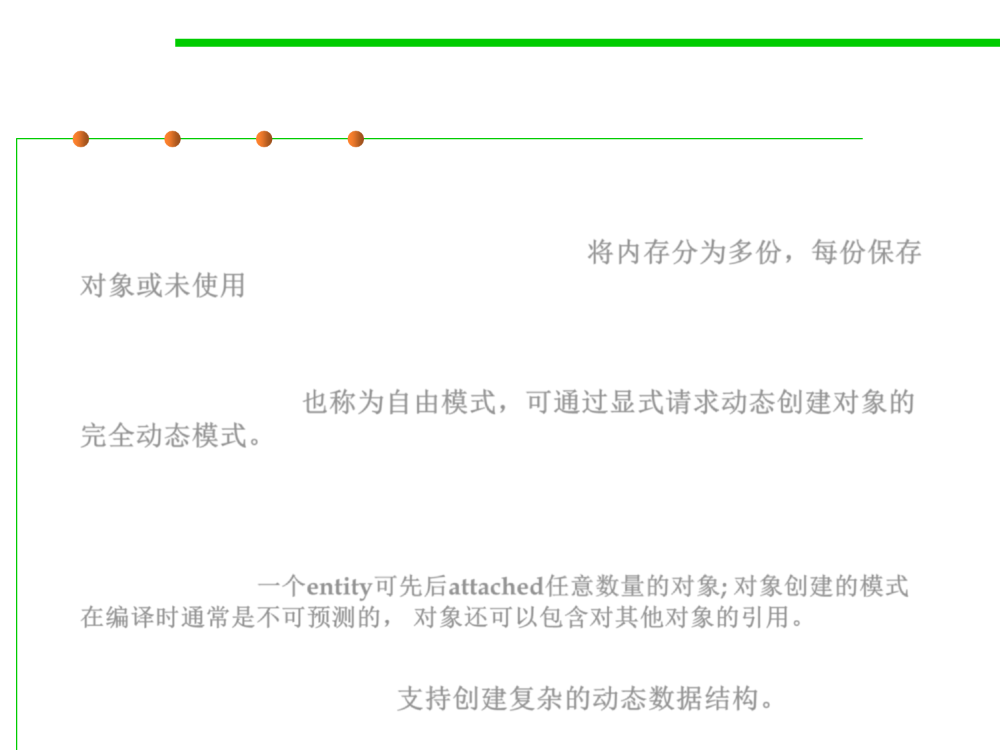

8.1 Metrics, Principles, and Methods of Construction for Performance
Heap-based mode
▪ A heap which is a part of memory that is split into many pieces
each of which either contains the representation of an object or is
unused (in which case we say it is free). 将内存分为多份，每份保存
对象或未使用
▪ Heap-based mode is also called free mode. This is the fully
dynamic mode in which objects are created dynamically through
explicit requests. 也称为自由模式，可通过显式请求动态创建对象的
完全动态模式。
▪ An entity may become successively attached to any number of
objects; the pattern of object creations is usually not predictable at
compile time. Objects may, furthermore, contain references to
other objects. 一个entity可先后attached任意数量的对象; 对象创建的模式
在编译时通常是不可预测的， 对象还可以包含对其他对象的引用。
▪ The free mode allows developers to create the sophisticated
dynamic data structures. 支持创建复杂的动态数据结构。